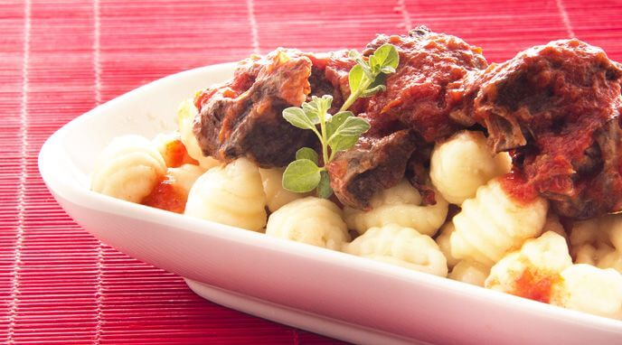

Ñoquis

Unos ricos ñoquis acompañados de un estofado y queso rallado para un mejor sabor
Es perfecto para un día que tengas tiempo y quieras pasar un buen rato en familia
Ingredientes
- Puré de papas 1/2kg.
- Huevos 1 unidad.
- Aceite de olvi 1 cda.
- Nuez Moscada 1/2 cdita.
- Sal 1 pizca.
- Pimienta Blanca Molida 1/2 cdita.
- Harina 2 tazas.
- Laurel en Hojas 2 unidades.
- Estofado de carne 500g.
- Queso rallado 4 cdas.
Pasos para la preparación
- Colocá el puré de papas recién hecho en un bol. Agregá el huevo y el aceite de oliva. Condimentá con sal y Nuez Moscada Molida y Pimienta Blanca Molida Alicante.
- Mezclá bien, tapá la preparación y llevala a la heladera hasta que se enfríe (40 minutos aprox.).
- Una vez que el puré condimentado esté frío, añadí harina previamente pasada por un colador fino o tamiz, integrala bien al puré, pero no amases porque sino la masa se volverá elástica y quedarán ñoquis gomosos.
- Colocá la masa sobre la mesada enharinada, formá tiras finas y cortá a partir de ellas los ñoquis. Pasá los ñoquis por una "ñoquera" o simplemente por un tenedor, dándoles así su forma típica.
- Una vez que estén listos todos los ñoquis, cocinalos en una olla con agua hirviendo con sal y Laurel en Hojas Alicante. Retiralos luego de 1 o 2 minutos (cuando suban a la superficie).
- Podés servirlos acompañados de un estofado de carne o simplemente con crema de leche y mucho queso rallado.
Tiempo estimado 40 minutos aprox
Volver al inicio